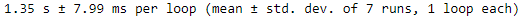

מה הזמן הרצה הממוצע שיצא לכן?
מה הצפי בערך?
על איזה תרגיל מדובר בידיוק?
תרגיל סט, אחד לפני האחרון
בערך שנייה, אם מגזימים אז 2
ל10000 פעמים או לפעם אחת?

העלאה הבאה זה כבר של הקוד 
הקוד עובד לי אבל לוקח לו מלא זמן וזה מעציב אותי…
אשמח לטיפ לייעול, נראה לי שמה שתוקע לי את הקוד זה לולאות מקוננות אבל ווידאתי שאני לא מבצא פעולות מיותרות כמו לבדוק פעמיים אותה שלשיית קלפים כשהם מופיעים בסדר שונה.
האם יש צורך לבצע הדפסה של הסטים גם בהרצה של 10000 פעמים?
זה מה שמאט את ההרצה(הדפסות)
אין צורך לפי הבנתי
לייק 1
אני לא יודע אם זה יעזור אבל תבחן אם אתה אכן בודק את המינימום הנדרש על מנת להגיע לתשובה בכל איטרציה, אולי יש איזה “מודול עסיסי” שיכול לעזור לך, וכמובן שקריאה קצת על הסתברות וקומבינטוריקה לא יכול להזיק
בהצלחה!
תודה, זה היה אחלה רעיון! מצאתי מודול עסיסי שחסך לי את הצורך לחזור לטראומה של מבוא לסטטיסטיקה
לייק 1

 כיף לשמוע
כיף לשמוע
שאלה בייעול:
נניח שאני רוצה לספור כמה פעמים קורה דבר מסויים.
יש לי לולאה בתוך לולאה בתוך לולאה (3 לולאות).
נניח שבאחת הריצות התנאי שהצבתי לספירה התקיים —> פה אני בנקודה ש2 הלולאות הפנימיות ימשיכו לרוץ עד סיומן, אבל זה מאוד מיותר.
אשמח לדעת אם יש איזו פעולה שיכולה להחזיר אותי לערך הבא בלולאה הראשית (הראשונה) ולהמשיך משם כרגיל.
(אני לא רוצה לסיים את הלולאה הראשית, אני רק רוצה לסמן ולדלג על הערך שבו התנאי התקיים)
תודה!
אשמח לדעת אם יש דרך לסיים את כל הלולאות (כולל הראשית)
אני מכיר את הפעולה break (לא בטוח אם מותר לנו להשתמש בה או לא)
אבל כשאני עושה לולאה בתוך לולאה ואז תנאי, אני כותב בגוף התנאי משהו שנמצא בindentation שמתאים לתנאי או ללולאה הפנימית. איך אני יכול להציב תנאי שיסיים את ההרצה של כל הלולאות?
אני יודע איך אפשר עם לולאת while, אבל הייתי שמח להבין אם אפשר גם בלולאת for
אם זה בטוח פונקציה תשתמש בreturn
אני יכול לעשות שזה יהיה בתוך פונקצייה, אבל הייתי רוצה לדעת אם יש דרך יעילה אחרת.
פונקציה זו הצורה הטובה ביותר לממש דבר כזה.
אפשר גם לעשות משתנה שמחזיק exit_loops = True ולהציב בכל אחת מהלולאות שאם הוא True אז לעשות break גם מהלולאה הזו (לא בקורס שלנו; בנתיים אסור להשתמש ב־break). אבל זה מימוש די מכוער
לייק 1
היי,
אני לא יודעת אם לזה התכוונת, אבל מצאתי מודול שממש נועד למשחק סט. נראה שהוא יקל על הדברים, אבל מצד שני אין לו בכלל המלצות ב- pypi ואני מתלבטת האם להשתמש בו. תובנות בנושא?
אני אישית לא השתמשתי במודול הזה
אישית השתמשתי רק ב random, אבל אני חושב שכדאי לנסות ולראות אם זה עוזר לך.